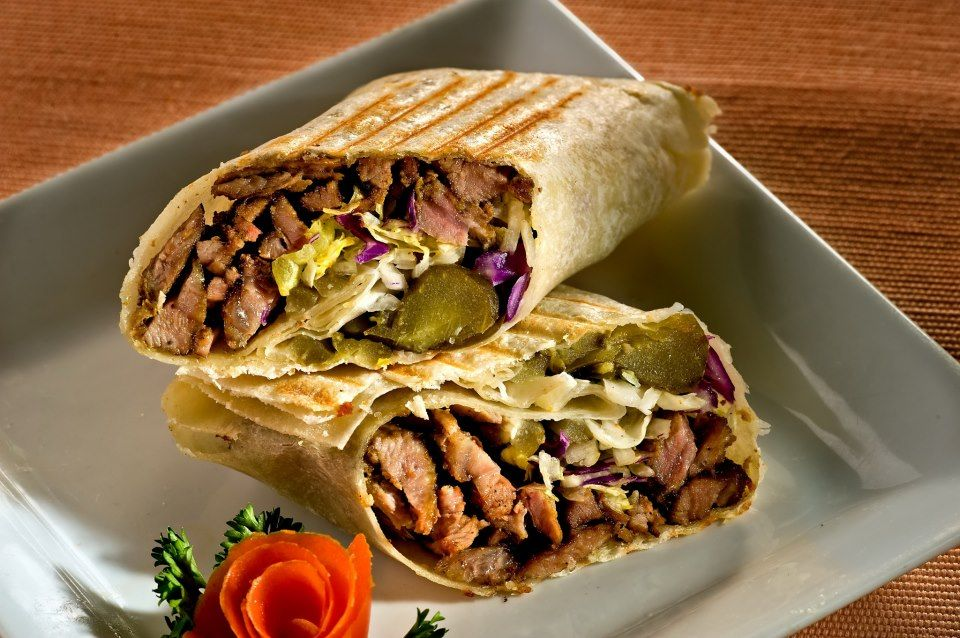

Delicious Shawarma Recipe
Beef shawarma is a very delicious dish loved by both adults and children,
and shops compete to prepare it in the best way.
Preparation time
- Preparation time: 20 minutes
- 1 teaspoon of salt
- Cooking time: 10 minutes
- Total time: 30 minutes
Ingredients
- ¾ kg of meat
- 1 teaspoon of salt
- 1 tablespoon of pepper
- 1 tablespoon of butter or oil
Preparation method
In a deep bowl, we place the meat and add garlic and salt
We add the pepper, paprika, garlic powder, and onion powder
Thus, the shawarma and the special sauce are ready and are served with white bread
We place the mixture in the electric grill until the meat is well cooked
Nutritional value
The table below shows the nutritional values for each serving without the additional toppings
calories 200kcol
Carbohydrates 42g
Fats 100gh